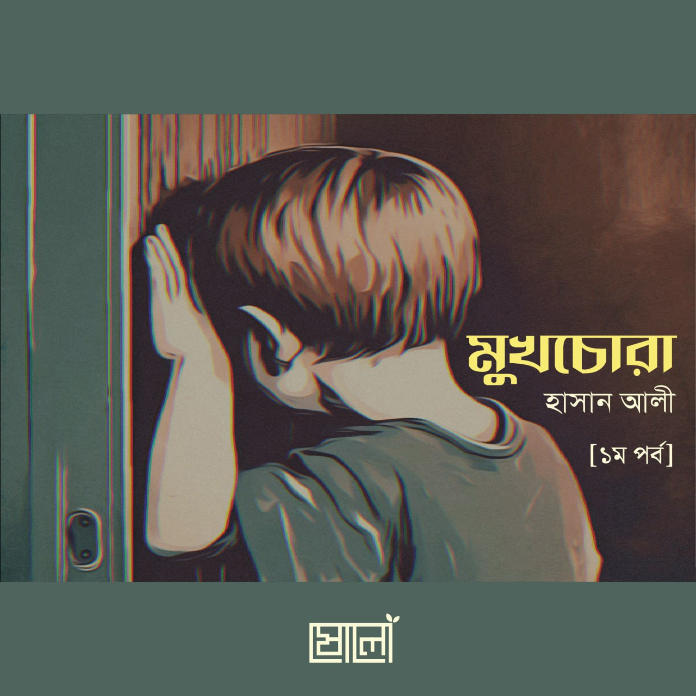

ধরো, ক্লাসে স্যার প্রশ্ন করল। তুমি উত্তর জানো। কিন্তু বলতে চাচ্ছ না। কারণ, তোমার উত্তর ভুল হলে বন্ধুরা হাসাহাসি করবে। ঠিক হলে আবার আঁতেল ইত্যাদি বলে পচাবে। তুমি প্রশ্নের উত্তর দেওয়ার সময় সবাই তোমার দিকে তাকিয়ে থাকবে—এটাতে তোমার অস্বস্তি হয়। লজ্জা লাগে।
.
এরকম কি হয় কখনো তোমার? আমার প্রচুর হতো। গ্রাম থেকে গিয়েছিলাম শহরের স্কুলে পড়তে। আমার মুখ দিয়ে কিছু বের হলেই ওরা বোধহয় আমাকে গেয়ো ভূত, ক্ষ্যাত বলে পঁচাবে এই ভয়ে সিটিয়ে থাকতাম সব সময়।
.
আবার ধরো কোনো দাওয়াত খেতে গেছ, কোনো রেস্টুরেন্ট এ গেছ, কোনো আত্মীয়ের বাসায় গেছ—তুমি কি সব সময় ভয়ে, অস্বস্তিতে থাকো—আমাকে যে কেমন দেখাচ্ছে, আমি এত শুকনা, এত মোটা। এই বুঝি এমন কিছু করে বা বলে ফেললাম, যাতে মানুষ ভাববে আমি একটা নিরেট বোকা। আমাকে নিয়ে হাসাহাসি করবে। কথা বলার সময় নিজেই নিজের কণ্ঠ শুনে ভয় পাও? অপরিচিত মনে হয়? সব সময় নিজেকে গুটিয়ে রাখো? নতুন বন্ধু বানাতে পারো না? কারও সাথে তেমন মিশতে পারো না? দোকানে গিয়ে ভিড় ঠেলে কোনো কিছু কিনতে গেলে ভয় লাগে? এমনটা কি মনে হয় তোমার?
.
যদি এমন মনে হয় তাহলে তুমি প্রতি ২০ জন কিশোর-কিশোরীদের একজন, যারা সোশ্যাল এংজিটিতে ভোগে। ভালো বাংলা আসলে পেলাম না। সামাজিক উদ্বেগ, লজ্জা,[১] ভীতি, কে কী মনে করে ইত্যাদি সব কিছুর সংমিশ্রণ আরকি। এবং চুপি চুপি বলি, এই সবকটি সমস্যা আমারও ছিল! তোমাদের অনেকের চাইতে অনেক বেশি। সবাই ড্যাবড্যাব করে আমাকে দেখছে, আমার সবকিছু খুঁটিনাটি দেখে আমার সম্পর্কে নেতিবাচক মন্তব্য করবে, বা মনে মনে ভাববে এ ধরনের চিন্তাভাবনা কিশোর-কিশোরীদের ক্ষেত্রে আসলে খুবই কমন। নার্ভাস হয়ে যাওয়া, ভয় পাওয়া, আতঙ্কিত হওয়া, টেনশন করা, লজ্জা পাওয়া, অস্বস্তি বোধ করা, অনিরাপদ বোধ করা (ভেতরে একটা কান্না পাবার অনুভূতির মতো অনেকটা। এ সময় বাবা-মার কথা খুব মনে পড়ে)—এগুলো প্রায় সব টিনেজারদের অনুভূতি। তুমি একা নও।
.
কোন কোন ক্ষেত্রে আমার এমন অনুভূতি হতো, তা এখনো মনে আছে। বিশেষজ্ঞদের বইপত্র ঘাঁটার পর এরকম একটা লিস্টও পেয়ে গেলাম। তো আসো, আগে সেই লিস্টটা দেখে নাও। যেসব পয়েন্ট তোমার সাথে মিলে যায়, সেগুলো টিক দিয়ে রাখো।
.
☞ ফোনে কথা বলা
☞ ক্লাসে প্রশ্নের উত্তর দেওয়া
☞ ক্লাসে শিক্ষককে কোনো প্রশ্ন করা, সাহায্য চাওয়া
☞ সামাজিক অনুষ্ঠানে অংশগ্রহণ করা
☞ দাওয়াত খেতে যাওয়া
☞ স্কুল বা কলেজের খেলাধুলায় সক্রিয় অংশগ্রহণ করা
☞ অন্যদের সামনে কথা বলার সময় কাঁপা-কাঁপি, চেহারা লাল হয়ে যাওয়া, তলপেটে গুলুমুলু গুলুমুলু অনুভূতি হওয়া
☞ অন্যদের সামনে খাওয়া
☞ এমন কোনো রুমে প্রবেশ করা যেখানে অন্যরা আছে [স্বল্প পরিচিত বা এই টাইপের মানুষজন]
☞ ক্লাসে জোরে জোরে রিডিং পড়া
☞ ক্লাসে সবার সামনে দাঁড়িয়ে কথা বলা
☞ ক্লাসের বোর্ডে কোনো কিছু লেখা
☞ অপরিচিত মানুষজনের সঙ্গে কথা বলা
☞ অপরিচিত/পরিচিত মানুষজনের সঙ্গে কথোপকথন শুরু বা যোগদান করা
☞ অন্যদের সামনে টয়লেটে যেতে লজ্জা পাওয়া
.
এই লিস্টের অনেককিছুই হয়তো তোমার মধ্যে আছে। তার মানে কি তোমার সমস্যা আছে? তুমি অসুস্থ?
.
মোটেই না। আগেই তো বললাম, এই বয়সে সবারই কমবেশি এমন অনুভূতি থাকে। এমনকি অনেক ধামড়া মানুষেরও এসব সমস্যা থাকে। অধিকাংশ মানুষের ক্ষেত্রেই বয়স বাড়ার সাথে সাথে এ বিষয়গুলো চলে যায়। এই অনুভূতিগুলো নিয়ে চিন্তিত হবার কিছু নেই। কিন্তু যদি তুমি এই অনুভূতিগুলোর কাছে পরাজিত হয়ে সেই কাজগুলো না করো বা বড় হবার অপেক্ষায় থাকো—বড় হলে তো সব ঠিক হয়েই যাবে—তাহলেই শুরু হবে সমস্যার! জীবনের অনেক অনেক কিছু মিস করে ফেলবে তুমি। হয়তো পৃথিবীর বুকে সত্য ও ইনসাফের একশটা ফুল ফোটানোর সুযোগ ছিল তোমার। কিন্তু তুমি ফোটাবে একটা।
.
যাদের এই অনুভূতিগুলো হয় তারা ইতোমধ্যেই হয়তো বুঝে ফেলেছ, কত কী হারাচ্ছ তুমি,[২] তাই না? এই সিরিজে এই বিষয়গুলো থেকে কীভাবে মুক্তি পাওয়া যায়, তা নিয়ে আমরা ধারাবাহিক আলোচনা করব ইনশাআল্লাহ। লেখার মাঝে মাঝে বিভিন্ন বাড়ির কাজ দেওয়া হবে তোমাকে। তুমি যদি এগুলো করো, তাহলে ইনশাআল্লাহ এই প্যারাগুলো থেকে মুক্তি পাবে।
.
(চলবে ইনশাআল্লাহ)
.
[১] লজ্জা কিন্তু খারাপ জিনিস না। লজ্জা ঈমানের অঙ্গ। বিপরীত লিঙ্গের মানুষের সাথে কথা বলার ক্ষেত্রে তোমার যে লজ্জাবোধ কাজ করে এটা তোমার বিশুদ্ধ অন্তরের লক্ষণ। এটা পরিবর্তন করা যাবে না।
[২] কথা বলতে লজ্জা লাগে, তাই গার্লফ্রেন্ডকে প্রপোজ করতে পারিনি—এটা আবার ভেবে বসো না। একটা প্রেমই তোমার জীবনকে ধবংস করে দেবার জন্য যথেষ্ট। বিস্তারিত পড়তে পারো ‘আকাশের ওপারে আকাশ’ বইতে।